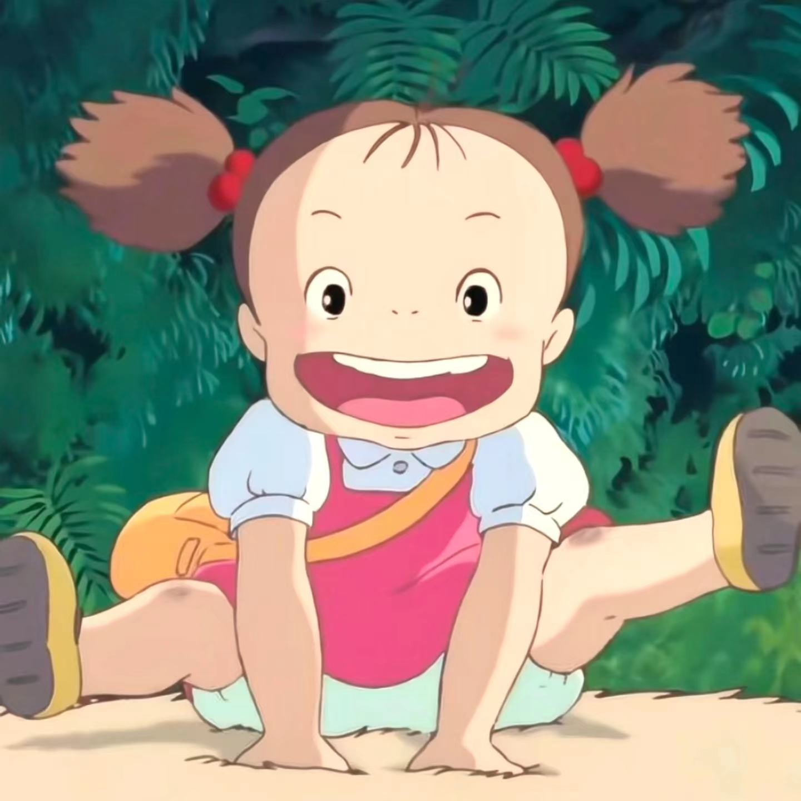
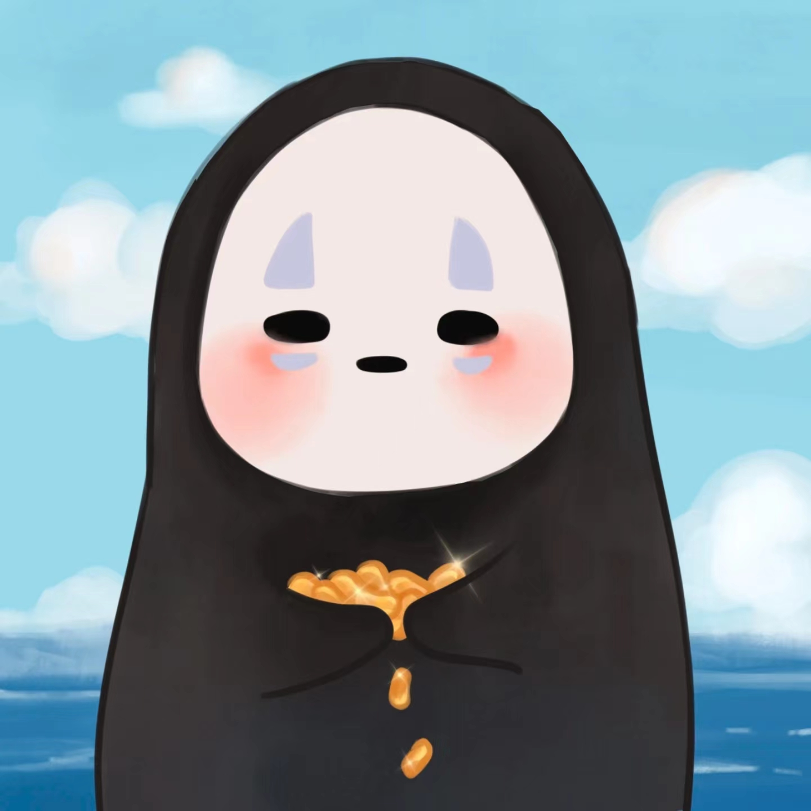
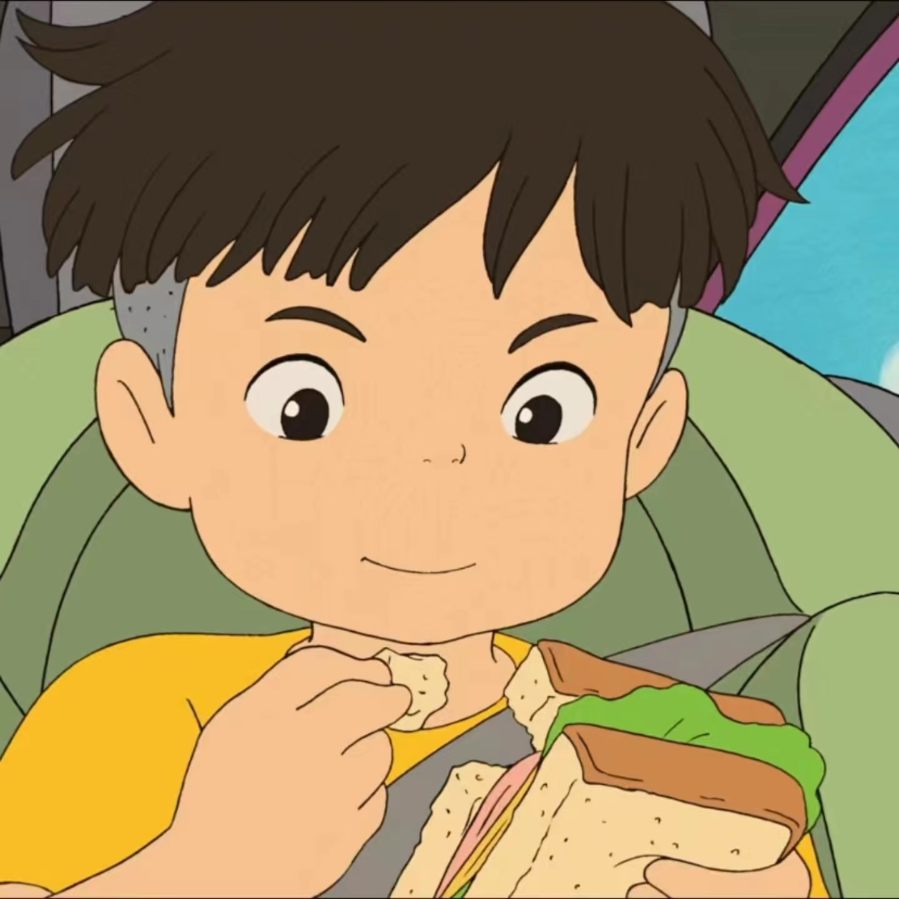

《龙猫》人物分析

龙猫：居住在森林中的巨大怪物。草壁梅独自一人在家中玩耍的时候，偶然进入森林之后发现了龙猫。龙猫乐观开朗，性格温顺，同样具有着精灵般的魔法的力量。他曾经帮助姐妹二人使种子发芽，还曾经帮助草壁皋月找回了迷路的草壁梅。
草壁梅：草壁皋月的妹妹，草壁梅性格更加活泼，她善于观察周遭有趣事物，但也常因冒失的举动让姐姐担心。由于年龄太小，她不能理解为什么妈妈没有按照约定回家陪自己玩，并决定自己跑去市里寻找妈妈。

草壁皋月：草壁家中的长女，稍微年长的她在妈妈生病的时候充当着照顾妹妹的角色。但说到底草壁皋月依然是一个小女孩，所以她才能和妹妹一起看到大人看不见的龙猫。性格温顺的她是家中的“小大人”。
草壁达郎：草壁皋月和草壁梅的父亲，同时也是一位大学教授。在妻子生病之后他决定为住院后的妻子提前准备一个安静的环境，所以带着两个女儿搬到了乡下。草壁达郎工作忙碌而且要看望妻子，但是他始终对于两个女儿保持着关心。

大垣勘太：草壁家的邻居，是一个内向、害羞、乐于助人的小男孩。他曾在见到草壁一家人的时候就告诉姐妹二人说他们家是“鬼屋”，大垣勘太坚信这个说法，他也拒绝进入草壁家的屋子。不过他对于草壁一家人并无敌意。在下雨天，他把伞借给了姐妹二人，而自己则淋雨回家。
《起风了》人物分析
里见菜穗子：美丽、纯洁、文艺、温柔娴淑、身患结核病。她如同清晨的朝露，照亮了工作狂二郎单调的人生。可以为了爱而不顾一切的人，与二郎的一见钟情，以及后来不顾自己病重，偷偷跑出医院。在自己临死之际只为见他最后一面。“起风了，唯有努力生存”，风可以吹走飞机，吹走菜穗子，吹走几乎一切，但吹不走这些事物在人心里留下的美。
堀越二郎：堀越二郎出生在闭塞的乡下。从小就对飞机有强烈的兴趣，梦想是“做出自己的飞机”。24岁以第一名成绩从东京帝国大学航空学科毕业后，就进入三菱重工，32岁事业取得突破性进展，设计出当时世界领先水平的9试单座战斗机（零式战机原型）。终于在自己的领域中以一己之力超越环境，取得了杰出的成就。


本庄：堀越二郎的同事，航空技师。
黑川：堀越二郎的上司，对二郎非常严厉。并看中了他理想，因而对二郎帮助很多。

《千与千寻》人物分析

荻野千寻：10岁的小学四年级生，随父母搬家到新城镇，在搬迁的路上，误入鬼怪神灵休息的世界。为了拯救变成猪的父母，在小白的帮助下，她留在澡堂“汤屋”工作，逐渐成长。汤婆婆为了控制来到这里的人，将她名字改为小千。最后帮助白龙想起了自己的名字，解除身上的咒语。
白龙：曾经生活在人类世界一条叫做“琥珀川”的河流里的龙，但因为河流被人类掩埋而无家可归，来到汤屋在汤婆婆门下学魔法，是澡堂的实际管理人员，汤婆婆的得力助手。他在千寻小的时候救过落水的千寻，并且记得她的名字。为此他冒险给了千寻很多帮助。

汤婆婆：澡堂“汤屋”的主管，同时也是镇上的管理人。她还经常会化身为黑翅膀的大鸟出门巡视，命令凡是不工作的人都要变成猪被吃掉，而为她工作的人都会被拿掉名字，一旦记不起来，就永远都离开不了她的澡堂了。然而，她对澡堂的客人却是百依百顺，笑脸相迎，每天都在房间里数钱记账，是一个十足的吝啬小老板形象。
无脸男：无脸男，神秘的鬼怪，全身黑色，头带一个白色面具。是一个渴望朋友的人，从一开始就在澡堂门口的桥上对小千产生兴趣，而最初也只有小千能看得到他，小千以为他是澡堂的客人，让他进来避雨，更加强了他对小千的喜爱。然而他在澡堂里逐渐受到了金钱和世俗的影响，成了一个可以变出金子，不停地吃东西甚至吃人的怪物。

坊宝宝：汤婆婆的独子，穿一件印有"坊"字样的肚兜。虽然他个子非常大，却是婴儿的模样，因为害怕“细菌”而天天待在堆满了玩具和枕头的房间里，和大多数孩子一样喜欢用哭来威胁人。后来被钱婆婆变成一只小老鼠跟随千寻旅行，有了很大成长。
《魔女宅急便》人物分析
琪琪：从小生长在一个魔女家庭。根据古老的传统习俗，她要完成魔女的修行——只要是魔女的孩子，满十三岁就要离开家门，寻找自己的城市开始独立。她有魔力，能听懂宠物猫吉吉说话，她纯洁、天真，喜欢听爸爸的收音机，一个晴朗的月圆之夜，在亲朋好友的送别下，她带着吉吉和爸爸的收音机踏上了她的旅程。
蜻蜓：是一个梦想制作出人力飞机在空中翱翔的少年，他看的在空中骑扫帚自由飞翔的琪琪后羡慕而又嫉妒，对琪琪怀有复杂的感情，琪琪被警察拦了下来时，蜻蜓帮助了她，但琪琪却因无法忍受他那随便的态度而飞走了。后来他们成了好友。他载着琪琪至海边看飞行船，路上差点出车祸，却发现脚踏车飞起来了。

乌露丝拉：少女画家。琪琪的朋友。住在小木屋里。她和琪琪交换条件，琪琪负责帮少女打扫房子，她则负责缝补好猫玩偶。一天，她来到琪琪家拜访，她邀请琪琪到小木屋做客，琪琪看到一幅天马行空的画，她请琪琪当画中主角的模特儿。
吉吉：琪琪的宠物猫。从出生就跟琪琪在一起，常被叫做魔女猫。吉吉经常给琪琪提供帮助，和琪琪一起成长，在琪琪13岁独立生活是陪她来柯里柯小城。唯一会的魔法就是跟琪琪说话。后来邂逅了猫咪莉莉，并成为了情侣关系，最后和莉莉有了四只小猫。

《悬崖上的金鱼姬》人物分析
波妞：藤本和曼玛莲的女儿。偷偷离开家后，被困在玻璃瓶里，后被宗介所救。宗介为她取名为“波妞”。因为舔了宗介的血液而成为半人鱼，任性的吵着要变成人类。喜欢火腿。会对讨厌的人喷水。
宗介：保育园“向日葵园”的5岁男孩。会用摩尔斯电码和爸爸对话。在悬崖下遇见波妞并决心要保护她。
理莎：宗介的妈妈，在向日葵老人中心工作。一个人兼顾工作与家事，是个非常年轻又能干的女性。
耕一：理莎的丈夫、宗介的爸爸。是一艘定期往返日本内海货轮的船长，所以经常不在家。用摩尔斯电码和家人对话。

《哈尔的移动城堡》人物分析

哈尔：移动城堡的主人，哈尔是既个性又有魅力的魔法师，传说中是个会吃掉姑娘心的巫师，常常分别使用不同的名字。哈尔拥有强大的魔力，但向往自由，不希望用魔法也接受战争，曾在史柏丽王室呆过一段时间，不理会皇宫的征召。最终为保护苏菲和所有人而拿出勇气，挺身而出，替他们挡去一切攻击，换城堡一片安宁。
苏菲：帽子店的长女，苏菲是个相貌清秀，且心地善良的少女。父亲去世后与继母和妹妹相依为命。因为被荒野女巫出于嫉妒施展了魔法，变成一个90多岁的老婆婆，并以清洁工的身份住进了哈尔的移动城堡。但她的勇敢和善良感动了周围的每一个人。最后，通过自己的努力，解开了所有人的诅咒，与哈尔幸福的生活在一起。
马鲁克：哈尔的小徒弟，在苏菲住进城堡之前，无依无靠的他常常一个人居住在城堡里，负责接洽王宫或城镇中来城堡拜访哈尔的人们。马克尔非常可爱，接待客人也从不以真面目，而是喜欢装扮成各种造型。苏菲住进城堡以后，马克尔逐渐变得活泼，很喜欢养宠物。马克尔把苏菲当成家人，十分担心她的安危，更不愿意与她分开。
稻草人王子：原本是邻国王子，一表人才，而且非常有学问，后来被下诅咒因而变成稻草人，是苏菲变成老婆婆后第一个帮助他的人，为了感谢，便一直跟在苏菲身边，替她遮风挡雨。变成稻草人后因为头像菜头所以苏菲给它取了一个名字叫“菜头”。虽然心中爱着苏菲，但也并不强求，在明白苏菲心意后，独自回国，并且真心祝福他们。

野蛮女巫：原本是个很厉害的魔法师，但因为与恶魔交易，导致身心都被吃掉，成为误入歧途的魔女，因此五十年前被赶到荒地。觊觎哈尔的心脏，因为哈尔的逃避而将苏菲变成老太婆，但本身并不觉得自己是在做坏事。之后被莎莉曼夫人拿走了身上的法术，恢复实际年龄的荒地女巫变成一个老太太，最后与苏菲一起住进了哈尔的移动城堡。
 《起风了》
《起风了》
 《千与千寻》
《千与千寻》
 《悬崖上的金鱼姬》
《悬崖上的金鱼姬》
 《哈尔的移动城堡》
《哈尔的移动城堡》